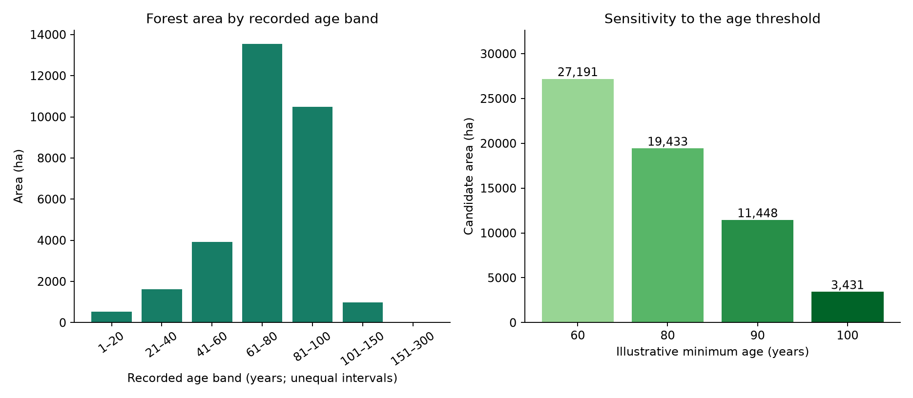
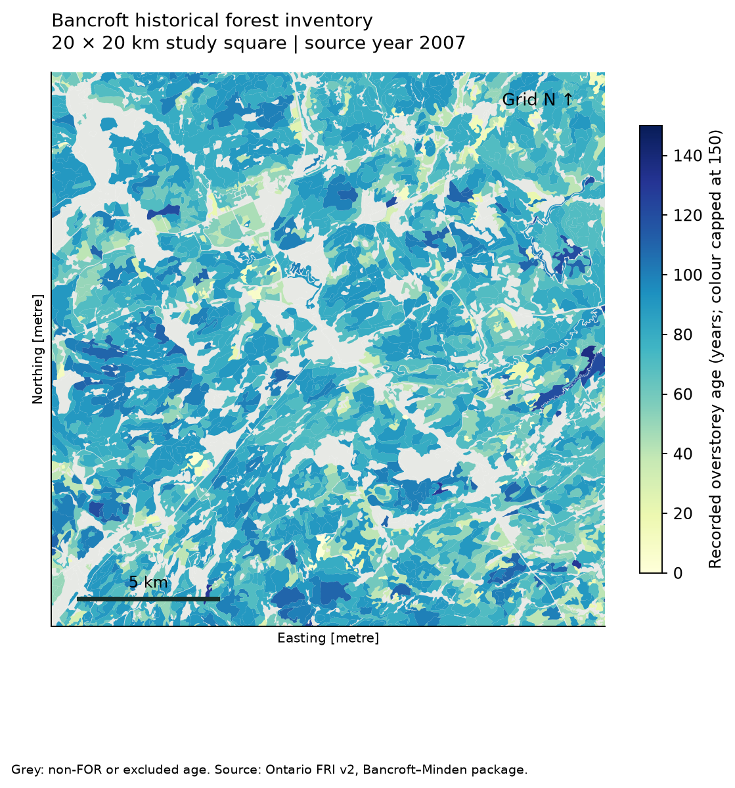
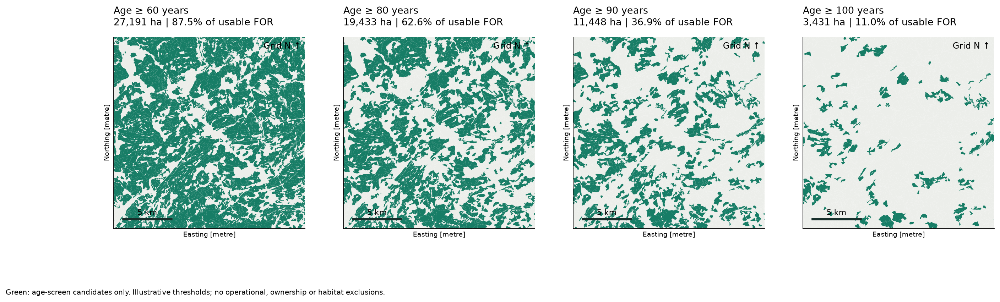
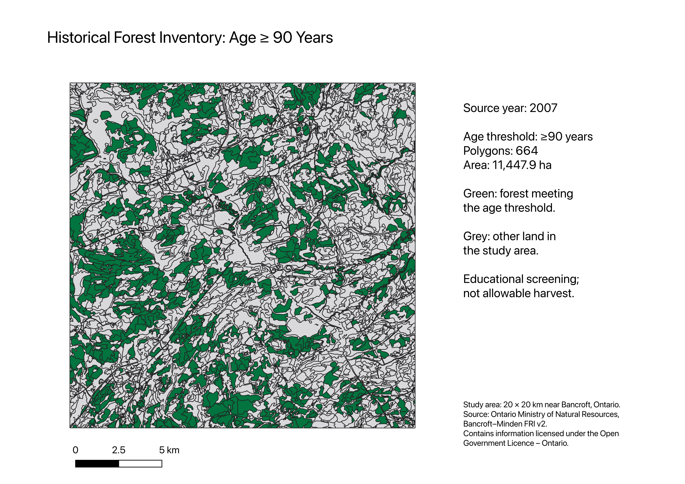

PORTFOLIO STUDY · HISTORICAL INVENTORY · 8 OCTOBER 2026
Bancroft–Minden FRI v2 · 20 × 20 km study square centred at 45.057°N, 77.858°W
This study screens recorded forest age under illustrative thresholds. It does not determine allowable harvest, ecological sustainability or current forest conditions.
How does the recorded age structure affect the area passing a simple age screen? The clipped study contains 31,063.5 ha coded FOR; 31,063.5 ha have ages usable under the disclosed quality rule. The area-weighted mean recorded age is 77.0 years.
| threshold_years | features | candidate_area_ha | pct_usable_forest |
|---|---|---|---|
| 60 | 1739 | 27,191.0 | 87.5 |
| 80 | 1162 | 19,432.5 | 62.6 |
| 90 | 664 | 11,447.9 | 36.9 |
| 100 | 183 | 3,431.4 | 11.0 |

Downloaded the Ontario official Bancroft–Minden 2008 2D package. All 110,053 source-layer records have YRSOURCE=2007. Ages were used as recorded, without adding elapsed years. The square is an intentionally selected local study extent, not a representative sample of the entire management unit.
Read Ban_Mind_FRI, retained source feature IDs, dropped vertical coordinates, validated geometry and clipped to the square. Calculated planar area in NAD83 / UTM zone 17N, dividing square metres by 10,000. Selected POLYTYPE=FOR. OAGE is treated as the recorded overstorey-age field; mixed-age stands are not fully represented by one age. Exact geometry-and-attribute duplicates were removed (0); repeated polygon identifiers alone were retained.
The full unit has 1,079 repeated-ID rows and 1 FOR records with OAGE above 300. These are review flags, not proven errors. In the study area 0 forest records, totalling 0.00 ha, fail the age rule (missing/nonpositive or above 300). The 300-year cutoff is an analyst-selected review limit, not a biological claim. Repaired geometries: 4. Remaining area overlap: 0.000000 ha. SQL and Python area totals agree; candidate area declines monotonically as the threshold increases.


The applicant independently applied the 90-year filter in QGIS, checked 664 polygons and 11,447.9 ha using Statistical Summary, and created this print layout with a scale bar and source attribution.

Raising the threshold narrows the set of polygons satisfying this single rule. The scenarios are nested screening sets, not selected harvest schedules. Thresholds of 60, 80, 90 and 100 years are teaching assumptions, not policy, species-specific maturity criteria or recommendations. Older forest area is not a complete biodiversity measure.
No ownership, protected-area, water-buffer, habitat, access, silvicultural-system or management-constraint exclusions have been applied. Historical data and one overstorey age cannot establish operational eligibility. For uneven-aged hardwood stands, age-only screening is particularly limited. No timber volume, growth, disturbance, renewal, harvest timing or socioeconomic impacts are modelled.
Confirm field definitions and flagged ages with the authoritative technical specification; add land tenure and management constraints; use species-appropriate growth/yield and silvicultural rules; then explore multi-period scenarios and validate assumptions with forestry staff.
Ontario FRI v2 official catalogue · Source package · Open Government Licence – Ontario. Contains information licensed under the Open Government Licence – Ontario.
Analysis: Python, GeoPandas, Shapely, Pyogrio, pandas, SQLite and Matplotlib. See analyze.py, audit.json, inventory.csv, scenarios.csv and inventory.gpkg. AI assisted implementation; the applicant should independently review the method and reproduce one parameter change before presenting it.